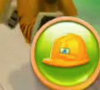
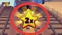

MOSS · 馆内追逐沿金币路线前进，避开阻挡
距离0 m
分数0
金币0
时间0 s/180s
森林极速跑
最高分0
最远距离0 m
方向键 / WASD · 空格跳跃 · P 暂停
怪谈博物馆 · 追逐记录
穿过夜间展厅
这是馆内追逐的街机化演绎：路线由 MOSS 引导，展柜、隔离栏与积水挡住去路。不要停留，持续奔跑 180 秒。
←→换道间隔 0.1 秒，耗时 0.25 秒，与跳、滑独立计时
↑Space跳过低栅栏、大石头与横向小河
↓S滑过高栅栏
WS跳跃、滑铲持续 0.7 秒；两者切换最短间隔 0.25 秒
🐿小动物会造成持续 5 秒的踉跄
👆手机横屏四向滑动；也可用屏幕按钮
磁铁

安全帽
分数翻倍⚡ 冲刺坚持 180 秒即可成功。速度每 30 秒变为 1.25 倍；推土机不能跳过。越界移动视为撞墙，前两次眩晕 5 秒，本局累计第三次失败。
稍作休息
游戏已暂停
MOSS · 追逐记录中断
路线已失守
最终分数0
本局距离0 m
本局金币0
历史最高0
MOSS · 180 秒记录完成
已脱离追逐
最终分数0
本局距离0 m
本局金币0
坚持时间180 s